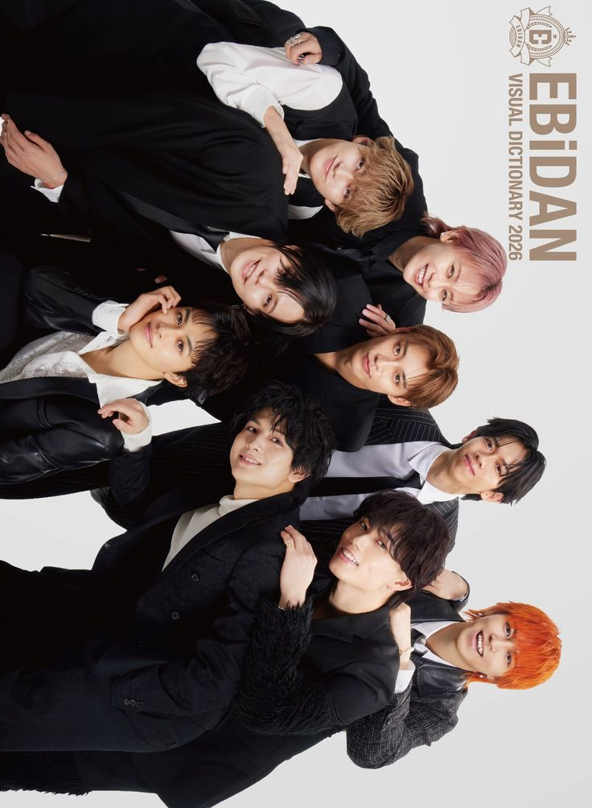
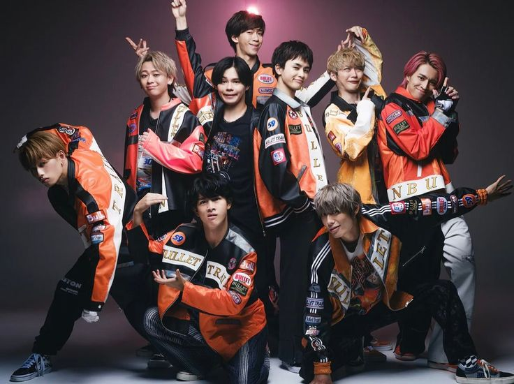

Choutokkyuu (超特急), internationally known as Bullet Train, is a dynamic J-pop group that has redefined standard
boy band dynamics since their 2011 debut under Stardust Promotion. Unlike traditional groups where singers
dominate the front, Bullet Train operates on a highly unique "Main Dancer & Back Vocal" system. Their vocalists
provide the emotional and melodic backbone from the rear, while the explosive, theatrical main dancers take the
absolute center stage.
Adding to their distinct identity, the group centers their entire concept around a railway theme. Each member is
assigned a specific "train car" number, an official color, and a distinct personality archetype. Their massive
fanbase is endearingly called 8gousha (Car No. 8), symbolizing the vital passengers that the train pulls
along.
Musically, they are celebrated for a self-aware, highly entertaining "dasai-kakkoi" (lame but cool) aesthetic.
They seamlessly blend intense, world-class choreography with comedic, over-the-top facial expressions and
anime-esque concepts. After expanding from their original lineup to a powerhouse nine-member team in 2022, they
continue to sell out arenas across Japan with their high-octane energy and infectious pop-rock anthems.